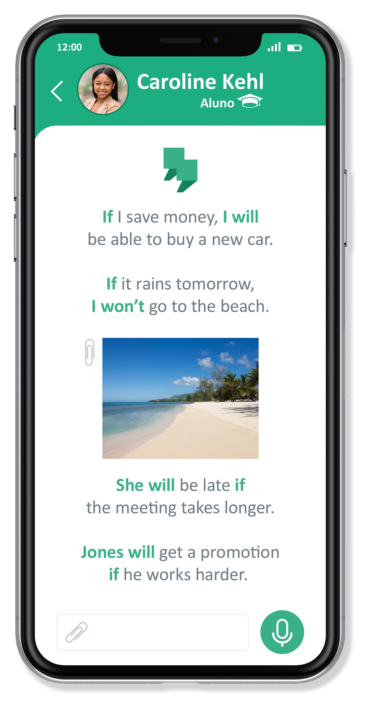
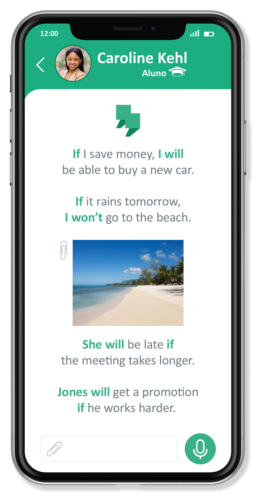

Visão Geral
Log-book é uma ferramenta criada para professores e a alunos particulares de inglês para registro de atividades e criação de portfólio.
Problema
Aulas de inglês podem ser frustrantes, em muitos casos pela falta da percepção do progresso individual. Alunos carecem de uma ferramenta digital que torne a produção em aula e a avaliação de suas habilidades mais acessíveis.
Solução
Alunos e professores irão usar o Log-book como uma ferramenta para registro das atividades dentro de sala de aula, desde sentenças produzidas pelos estudantes até a introdução de novos vocabulários. O professor pode ter a produção em aula como base para mensurar o progresso do aluno e assim entregar uma avaliação mais precisa ao fim de cada ciclo.
Usuários
Esta ferramenta é destinada a alunos e professores particulares de inglês. Foi projetada para estudantes interessados em otimizarem seu aprendizado dentro de sala de aula e professores que procuram entregar avaliações mais tangíveis e acessíveis aos alunos.
Meu papel
Além de designer, sou professor de inglês, por isso estive envolvido em todo o processo, desde a pesquisa , entrevista com os usuários (alunos e professores), ideação, prototipação, design de interface e teste de usabilidade.


 
